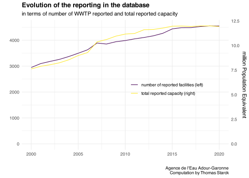
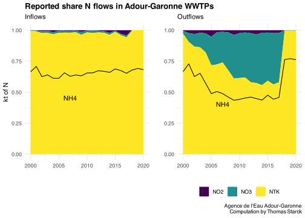

knitr::opts_chunk$set(warning=F, message=F, results=F, dev='svg')library(tidyverse) #loads multiple packages (see https://tidyverse.tidyverse.org/)#core tidyverse packages loaded:# ggplot2, for data visualisation. https://ggplot2.tidyverse.org/# dplyr, for data manipulation. https://dplyr.tidyverse.org/# tidyr, for data tidying. https://tidyr.tidyverse.org/# readr, for data import. https://readr.tidyverse.org/# purrr, for functional programming. https://purrr.tidyverse.org/# tibble, for tibbles, a modern re-imagining of data frames. https://tibble.tidyverse.org/# stringr, for strings. https://stringr.tidyverse.org/# forcats, for factors. https://forcats.tidyverse.org/# lubridate, for date/times. https://lubridate.tidyverse.org/#also loads the following packages (less frequently used):# Working with specific types of vectors:# hms, for times. https://hms.tidyverse.org/# Importing other types of data:# feather, for sharing with Python and other languages. https://github.com/wesm/feather# haven, for SPSS, SAS and Stata files. https://haven.tidyverse.org/# httr, for web apis. https://httr.r-lib.org/# jsonlite for JSON. https://arxiv.org/abs/1403.2805# readxl, for .xls and .xlsx files. https://readxl.tidyverse.org/# rvest, for web scraping. https://rvest.tidyverse.org/# xml2, for XML. https://xml2.r-lib.org/# Modelling# modelr, for modelling within a pipeline. https://modelr.tidyverse.org/# broom, for turning models into tidy data. https://broom.tidymodels.org/# Use the conflicted package (<http://conflicted.r-lib.org/>) to force all conflicts to become errors#loading additional relevant packageslibrary(cowplot) #for plot_grid()library(viridis) #for viridis colors#path for data path_source <-"source_data/05_adour_garonne/"path_output <-"output_data/STEU/Adour_Garonne/"Year_analysis <-2020#setting graphs themetheme_set(theme_minimal() +theme(plot.title =element_text(face="bold") ) )#for captions below graphsSource <-"Agence de l'Eau Adour-Garonne\nComputation by Thomas Starck"#setting viridis theme for colorsscale_colour_continuous <- scale_colour_viridis_cscale_colour_discrete <- scale_colour_viridis_dscale_colour_binned <- scale_colour_viridis_b#setting viridis theme for fillscale_fill_continuous <- scale_fill_viridis_cscale_fill_discrete <- scale_fill_viridis_dscale_fill_binned <- scale_fill_viridis_b# Load the function filesource("functions.R")
Two kinf of files are downloaded : one concerns pollution discharge and their location for each year (here), the other provides information about the waste water treatment plants characteristics (here).
There are 2 main files for each year (and also pdf files describing the variables). To see more details about the different points (A1, A2…), see here.
listObj_YEAR : these files describe the characteristics of the WWTP and networks.
listDataIndicateurs : these files describe the different flows, with 2 main variables, “indicator” and “parameter”. It also specified type_rj, whether it is RJ (“Point de rejet du système de traitement”, i.e. discharge by WWTP) or SC (“Système de collecte, direct dans le milieu naturel”, i.e. discharge by sewers)
indicators :
PORDO “Pollution déversée par le système de collecte représentative d’un jour moyen du mois considéré (issue de l’autosurveillance (Kg/j)”. Only starting 2009. Associated with type_rj=RJ. We assimilate this to the A1 point, i.e. discharge by sewers, and rename it ._collection_discharge.
PORBP “Pollution by-passée en tête de station représentative d’un jour moyen du mois considéré (issue de l’autosurveillance (Kg/j)”. Associated with type_rj RJ. We assimilate this to the A2 point, i.e. last discharge point before the WWTP, and rename it ._head_by_pass.
PORMX “Pollution estimée rejetée directement par le système de collecte (si pas de station d’épuration ou pas de mesures sur DO ou By-pass)”. Only before 2015. Associated with type_rj RJ, but before 2007 also associated to SC. This is an estimation of A1+A2 points discharge before 2015, and rename it ._discharge_estimate.
POENT “Pollution mesurée entrante en station (Kg/j)”. We assimilate this to the A3 point, i.e. pollution inflow to WWTP.
POSOR “Pollution mesurée en sortie de station d’épuration”. We assimilate this to the A4 point, i.e. pollution outflow of WWTP.
PLUIE “Pluie mesurée (mm)”. Rain in mm. We do not analyse this.
BOUE “Quantité de boues produite et évacuée”. Quantity of sludge produced, we do not analyse it.
A2. Not described, but always associated to the parameter NBJDV “nombre de jours de déversement”, not reported before 2018. Associated with type_rj RJ. This is the nb of days (per month) where discharge on A2 point occurs.
PODMI Not described, but just from 2000 to 2007. Associated with the parameters nutrients (MES, Pt, NGL…) and only with type_rj SC (not RJ). We do not analyse it.
POIMI same as PODMI, but also associated with VOL. We do not analyse it.
parameters :
the nutrients : “NO2” “MES” “NTK” “DBO5” “NGL” “NO3” “PT” “DCO” “NH4”, in kg/day
volume “VOL” in m3/day
rainfall “PLUIE” in mm
“NBJDV” “Nombre de jours de déversement”. Associated with type_rj RJ. For 2015-2020, associated with the indicator PORDO. Also associated with A2 for 2018-2020.This is the nb of days (per month) where discharge on A1 or A2 point occurs.
and the sludge production and destination in kg of dry matter per year : production “PROD”, spread “U”, composted (before 2013) “C”, composted normalized “C1”, composted non normalized “C2”, landfilled “S”, in transition “T”, incinerated “I”, to other WWTP, “STEP”. We do not analise it.
type_rj SC is only associated to PORMX, PODMI and POIMI, from 2000 to 2007.
We load the pollutions in the listDataIndicateurs files, for each year.
Code
#loading all years, for pollutions (by discharge code name)file_adour_garonne <-list.files( #read and merge csv of all yearspath = path_source,pattern ="listeDataIndicateurs*", full.names = T, recursive = T ) %>%lapply(read_delim, delim =";") %>% bind_rows
Code
#Spotting duplicates observation of the quadruplets (code_rj, indicateur, parametre, annee)temp <- file_adour_garonne %>%select(code_rj, annee, indicateur, parametre) #selects quadrupletstemp$duplicated <-duplicated(temp) #spots duplicatestemp <- temp %>%filter(duplicated == T) #filters duplicatestemp <-left_join(temp, file_adour_garonne) #exctract dupplicates informations from main filenrow(temp) #number of rows 200 (so 100 unique observations)unique(temp$code_rj) #spots the unique code_rj duplicated (only 3)# We remove SERRES-MORLAAS and ST AULAYE (Bourg)file_adour_garonne <-subset(file_adour_garonne, !(code_rj %in%c("0564520V0011", "0524376V0021")))# We remove LAVAUR just for 2000file_adour_garonne <-subset(file_adour_garonne, !(code_rj =="0581140V0041"& annee =="2000"))
In the listDataIndicateurs files, which reports pollution at the discharge points, there are 100 pollution observations (code_rj) that are reported twice, concerning 3 waste water treatment plants.
SERRES-MORLAAS in 2018, 2019 and 2020 (code_rj 0564520V0011), capacity of 850 population equivalent. Negligible, we completely remove it.
ST AULAYE (Bourg) in 2018 (code_rj 0524376V0021), capacity of 1 200 population equivalent. Negligible, we completely remove it.
LAVAUR in 2000 (code_rj 0581140V0041), capacity of 10 000 population equivalent => We remove Lavaur just for this year since its a rather big town.
Then we load the WWTP descriptions in the listeObj files, for each year.
Code
#for 2010-2020, the files are reported in multiple folders : we load each file, add the year, and merge themf_load_WWTP_2010_2020 <-function (year_min, year_max){ path <-"source_data/05_adour_garonne/donnees_rejets_collectivites_"#intialization temp <-read_csv2(paste0(path, as.character(year_min), "/listeObj.csv"),#we have to specify the columns types, otherwise some problemscol_types =cols(debit_nominal_tps_pluie="numeric",insee_commune="character",insee_commune_step="character" ) ) %>%#adding the yearmutate(annee=year_min)#loopfor (i in (year_min+1):year_max){ temp2 <-read_csv2(paste0(path, as.character(i), "/listeObj.csv"),col_types =#we have to specify the columns types, otherwise some problemscols(debit_nominal_tps_pluie="numeric",insee_commune="character",insee_commune_step="character" ) ) %>%#adding the yearmutate(annee=i) temp <-bind_rows(temp, temp2) }return(temp)}file_WWTP_2010_2020 <-f_load_WWTP_2010_2020(2010, 2020) %>%distinct()#for 2000-2009, files are reported in one unique folder ; we load each file, add the year, merge themf_load_WWTP_2000_2009 <-function (year_min, year_max){ path <-"source_data/05_adour_garonne/donnees_rejets_collectivites_2000_2009/listeObj.csv" temp <-read_csv2(path) %>%mutate(annee=year_min)for (i in (year_min+1):year_max){ temp2 <-read_csv2(path) %>%mutate(annee=i) temp <-bind_rows(temp, temp2) }return(temp)}file_WWTP_2000_2009 <-f_load_WWTP_2000_2009(2000, 2009) %>%distinct()#we merge the files for 2000-2009 and 2010-2020file_WWTP <-bind_rows( file_WWTP_2000_2009, file_WWTP_2010_2020)
Code
WWTP <- file_WWTP %>%select(#we select and rename in standard denomination the variables of interestYear = annee,code_discharge = code_rj,code_WWTP = code_step,name_WWTP = nom_step,INSEE_COM = insee_commune_step, #commune of the WWTP : possible to also have commune of discharge locationname_commune = nom_commune_step, #commune of the WWTP : possible to also have commune of discharge locationcapacity = capacite, # in population equivalentnetwork_type = nature_reseau,treatment_type = traitement_principal,long_WWTP = x_step,lat_WWTP = y_step,long_discharge = x_rj,lat_discharge = y_rj,discharge_location = milieu_recepteur#possible to get : water nominal flow (dry and wet weather)#possible to get : nominal load DBO5, DCO, MES#other variables (type_rj...) not selected because already in file_adour_garonne, merged after )#transform monthly values into annual values, drops monthly valuesN_P_adour_garonne <- file_adour_garonne %>%rename(Year = annee,code_discharge = code_rj ) %>%mutate(valeur =rowMeans(.[7:18], na.rm = T)) %>%#annual mean over the 12 monthsselect(!(valeur_01:valeur_12)) #drops monthly valuesN_P_adour_garonne <- N_P_adour_garonne %>%#sludge values put with other valuesmutate(valeur =case_when(is.na(valeur_y) == F ~ valeur_y, T ~ valeur ) ) %>%#drops useless columns of sludgeselect(-valeur_y) %>%#replace NAN (issued from rowMean) into NAmutate_all(~ifelse(is.nan(.), NA, .)) %>%#preparing standard renaming for columnsmutate(#rename PT in Ptparametre =case_when( parametre =="PT"~"Pt", T ~ parametre ) ) %>%filter(#"PLUIE" not selected for now ; PORMX neither (data before 2015) (indicateur %in%c("POENT", "POSOR", "PORDO", "PORBP", "BOUE", "A2", "PORMX")) & (parametre %in%c("NGL", "NTK", "NH4", "NO2", "NO3", "Pt", "DBO5", "DCO", "MES", "VOL",#for now only sludge production, not destination (U, I, S...)"PROD",#nb of days of discharge"NBJDV")) ) %>%#rename for concatenationmutate(indicateur =case_when( indicateur =="POENT"~"in", #A3 point indicateur =="POSOR"~"out", #A4 point indicateur =="PORDO"~"collection_discharge", #A1 point indicateur =="PORBP"~"head_by_pass", #A5 point (and A2 ?) indicateur =="BOUE"~"sludge", #A6 point indicateur =="A2"~"A2", #A2 point indicateur =="PORMX"~"discharge_estimate", #A1 point (and A2 point ?) before 2015 if no measure ),parametre =paste(parametre, indicateur, sep="_") ) %>%select(-indicateur) %>%spread(key = parametre, value = valeur)
Code
#Spotting duplicates observation of the doublets (code_rj, Year)temp <- WWTP %>%select(code_discharge, Year) #selects quadrupletstemp$duplicated <-duplicated(temp) #spots duplicatestemp <- temp %>%filter(duplicated == T) #filters duplicatestemp <-left_join(temp, WWTP) #exctract dupplicates informations from main fileunique(temp$code_discharge) #spots the unique code_discharge duplicated (only 7)
For the listObj files, which reports WWTP characteristics, there are 7 discharge codes that are reported twice (under 2 different WWTP codes) :
We compute the yields and ratios for each WWTP, and we compute NGL with NTK, NO2 and NO3 when possible. For incoming NGL, when possible we use NTK, NO2 and NO3, but if only NTK is available we also keep it as a good approximation (NO is negligible for incoming pollution). For discharged NGL, NO3 and NTK must be reported, and we accept to neglect NO2 when it is unreported.
Code
N_P_adour_garonne <- N_P_adour_garonne %>%ungroup() %>%# we need to be "row wise" to use "sum(., na.rm=T) : # just summing the columns A+B would return NA when at least 1 columns as NA in the rowrowwise() %>%mutate(#for NGL in, if NTK_in reported we accept to not consider unreported NO2_in and NO2_in as 0 (because NO in negligible)#if NTK_in unreported, NGL_in is unreportedNGL_in_computed =sum(NTK_in, NO2_in, NO3_in, na.rm=!is.na(NTK_in)), NGL_collection_discharge_computed =sum(NTK_collection_discharge, NO2_collection_discharge, NO3_collection_discharge, na.rm=!is.na(NTK_collection_discharge)), NGL_head_by_pass_computed =sum(NTK_head_by_pass, NO2_head_by_pass, NO3_head_by_pass, na.rm=!is.na(NTK_head_by_pass)), #For NGL_out, NO3 and NTK must be reported, and we accept to neglect NO2 when it is unreported.NGL_out_computed =sum(NTK_out, NO2_out, NO3_out, na.rm=!((is.na(NTK_out)|is.na(NO3_out)))) ) %>%mutate(#yieldsPt_yield = (1-Pt_out/Pt_in)*100,NGL_yield = (1-NGL_out/NGL_in)*100,DBO5_yield =(1-DBO5_out/DBO5_in)*100, DCO_yield =(1-DCO_out/DCO_in)*100,MES_yield =(1-MES_out/MES_in)*100,#ratiosN_P_ratio_in = NGL_in/Pt_in,N_P_ratio_out = NGL_in/Pt_out,DCO_DBO5_ratio_in = DCO_in/DBO5_in,DCO_DBO5_ratio_out = DCO_out/DBO5_out,DBO5_NGL_ratio_in = DBO5_in/NGL_in,DBO5_NGL_ratio_out = DBO5_out/NGL_out,DBO5_Pt_ratio_in = DBO5_in/Pt_in,DBO5_Pt_ratio_out = DBO5_out/Pt_out )
We create the capacity categories in terms of population equivalent.
We compute the yields at the basin scale, and also by capacity categories.
Code
#have to do this in case inflow or outflow is more reported than the other one, which would create a bias if we took the ratio of the already aggregated flowsf_yield_basin <-function(basin, dataset, nutrientIN, nutrientOUT){ temp <- dataset %>%filter(is.na(!!as.symbol(nutrientIN))==F &is.na(!!as.symbol(nutrientOUT))==F ) %>%group_by(Year) %>%summarise(nutrient_in =sum(!!as.symbol(nutrientIN), na.rm=T),nutrient_out =sum(!!as.symbol(nutrientOUT), na.rm=T),yield =round((1-nutrient_out/nutrient_in)*100, digits =0) ) %>%select(-nutrient_in, -nutrient_out) basin <-left_join( basin, temp, by="Year" )return(basin)}f_yield_basin_PE <-function(basin_PE, dataset, nutrientIN, nutrientOUT){ temp <- dataset %>%filter(is.na(!!as.symbol(nutrientIN))==F &is.na(!!as.symbol(nutrientOUT))==F ) %>%group_by(Year, PE_bin) %>%summarise(nutrient_in =sum(!!as.symbol(nutrientIN), na.rm=T),nutrient_out =sum(!!as.symbol(nutrientOUT), na.rm=T),yield =round((1-nutrient_out/nutrient_in)*100, digits =0) ) %>%select(-nutrient_in, -nutrient_out) basin_PE <-left_join( basin_PE, temp, by=c("Year", "PE_bin") )return(basin_PE)}f_all_yields_basin <-function(basin, dataset){ basin <- basin %>%#NGL yieldf_yield_basin(dataset, "NGL_in", "NGL_out") %>%rename(NGL_yield = yield) %>%#Pt yieldf_yield_basin(dataset, "Pt_in", "Pt_out") %>%rename(Pt_yield = yield) %>%#DBO5 yieldf_yield_basin(dataset, "DBO5_in", "DBO5_out") %>%rename(DBO5_yield = yield) %>%#DCO yieldf_yield_basin(dataset, "DCO_in", "DCO_out") %>%rename(DCO_yield = yield) %>%#MES yieldf_yield_basin(dataset, "MES_in", "MES_out") %>%rename(MES_yield = yield) return(basin)}f_all_yields_basin_PE <-function(basin_PE, dataset){ basin_PE <- basin_PE %>%#NGL yieldf_yield_basin_PE(dataset, "NGL_in", "NGL_out") %>%rename(NGL_yield = yield) %>%#Pt yieldf_yield_basin_PE(dataset, "Pt_in", "Pt_out") %>%rename(Pt_yield = yield) %>%#DBO5 yieldf_yield_basin_PE(dataset, "DBO5_in", "DBO5_out") %>%rename(DBO5_yield = yield) %>%#DCO yieldf_yield_basin_PE(dataset, "DCO_in", "DCO_out") %>%rename(DCO_yield = yield) %>%#MES yieldf_yield_basin_PE(dataset, "MES_in", "MES_out") %>%rename(MES_yield = yield) return(basin_PE)}basin_N_P_adour_garonne <-f_all_yields_basin(basin_N_P_adour_garonne, N_P_adour_garonne)basin_PE_N_P_adour_garonne <-f_all_yields_basin_PE(basin_PE_N_P_adour_garonne, N_P_adour_garonne)
We create the years categories (every 5 years).
Code
#function to create years categoriesf_year_categories <-function(dataset){ dataset <- dataset %>%mutate(Year_category =case_when( Year %in%c(1991, 1992, 1993, 1994, 1995) ~"1991-1995", Year %in%c(1996, 1997, 1998, 1999, 2000) ~"1996-2000", Year %in%c(2001, 2002, 2003, 2004, 2005) ~"2001-2005", Year %in%c(2006, 2007, 2008, 2009, 2010) ~"2006-2010", Year %in%c(2011, 2012, 2013, 2014, 2015) ~"2011-2015", Year %in%c(2016, 2017, 2018, 2019, 2020) ~"2016-2020", ) )return(dataset)}N_P_adour_garonne <-f_year_categories(N_P_adour_garonne)basin_N_P_adour_garonne <-f_year_categories(basin_N_P_adour_garonne)basin_PE_N_P_adour_garonne <-f_year_categories(basin_PE_N_P_adour_garonne)
There are some reported discharge points without any associated WWTP, but only before 2008. In terms of flows (here for Pt and NGL) these points are not negligible.
Code
#check if no doublonsdoublons <-N_P_adour_garonne %>%select(Year, code_discharge) %>%count(Year, code_discharge) %>%filter(n !=1)#0 doublons for code discharge: pefect !rm(doublons)
We compare the reported NGL to our computed NGL (from NTK, NO2 and NO3). There is a good match for incoming flows (and for incoming flow NGL ~ NTK). This is not the case for outgoing flow, probably because NO3 is often not reported (which is an exclusion criteria for our computing method); same problem for 2018-2020. The reported NGL quantity seems coherent, so we choose to keep this one over our computed result.
For all nutrients, inflow an outflows seem consistent, except for NO2 (very small quantities with high volatility). There are some obvious errors for all nutrients regarding head by pass and collection discharge. We correct them in the “outliers correction” tab.
Code
f_graph_nutrient <-function ( dataset, nutrient_in, nutrient_out, nutrient_head_by_pass, nutrient_collection_discharge, label, legend_x, legend_y ) { p <-ggplot(dataset) +#nutrient inflowgeom_line(aes( Year, !!as.symbol(nutrient_in), color=nutrient_in ) ) +#nutrient outflowgeom_line(aes( Year,!!as.symbol(nutrient_out), color = nutrient_out ) ) +#nutrient dischargegeom_line(aes( Year,!!as.symbol(nutrient_collection_discharge), color = nutrient_collection_discharge ) ) +#nutrient by passgeom_line(aes( Year,!!as.symbol(nutrient_head_by_pass), color = nutrient_head_by_pass ) ) +ylim(0, NA) +theme(legend.position =c(legend_x, legend_y), legend.title =element_blank() ) +labs(x="", y=paste("kt of", label) , title =paste("Reported", label, "flows in Adour-Garonne WWTPs") ,subtitle ="reported, not necessarily actual ; here before data cleaning", caption = Source )return(p)}
for NLG out in 2001 for code_discharge 0531555V0181, just reported same value as NGL_in. We change this by a typical value considering the adjacent years.
The number of listed plants in the data base increases from 2948 to 4549 (a 54% increase) between 2000 and 2020, and the total capacity increases by 57% from 7.6 to 11.9 million Population Equivalent.
The total reported capacity stabilizes around 2015.
Code
coef <-max(temp$capacity)/max(temp$nb_WWTP)ggplot(temp) +geom_line(aes( Year, nb_WWTP, color ="number of reported facilities (left)" ) ) +geom_line(aes( Year, capacity/coef, color ="total reported capacity (right)" ) ) +scale_y_continuous(limits =c(0, NA),sec.axis =sec_axis(trans=~.*coef, name="million Population Equivalent" ) ) +labs(title ="Evolution of the reporting in the database",subtitle ="in terms of number of WWTP reported and total reported capacity",y="", x="", color="", caption =Source ) +theme(legend.position =c(0.7, 0.5) )

Code
temp <- N_P_adour_garonne %>%filter(is.na(capacity)==F) %>%select(Year, capacity, PE_bin) %>%group_by(Year, PE_bin) %>%summarise(`capacity (million PE)`=sum(capacity)/10^6,`number of stations`=n() ) %>%gather(key=capacity_or_n, value = value, `capacity (million PE)`, `number of stations`)
Navigate through tabs below to see details for each pollutant. For each pollutant, we present reporting for incoming and outgoing pollution, in terms of number of WWTP reporting the data or in terms of installed capacity.
NTK, NH4, Pt, DBO5, DCO and MES are extremely well reported for both in and out flows. NGL in is also very well reported, but this is less the case for NGL out with 15% of WWTP not reporting it in 2010, and less after. However in terms of capacity it represents less than 4%.
NO2 and NO3 are poorly reported
Code
f_graph_reporting_nutrients <-function(pollution_in, pollution_out, pollution_DO, pollution_BP){ temp <- N_P_adour_garonne %>%select( Year, capacity, !!as.symbol(pollution_in), !!as.symbol(pollution_out),!!as.symbol(pollution_DO), !!as.symbol(pollution_BP) ) %>%mutate(nutrient_in =is.na(!!as.symbol(pollution_in))==F,nutrient_out =is.na(!!as.symbol(pollution_out))==F,nutrient_DO =is.na(!!as.symbol(pollution_DO))==F,nutrient_BP =is.na(!!as.symbol(pollution_DO))==F ) %>%gather(key=in_out_flow, value =`reported pollution`, nutrient_in, nutrient_out, nutrient_DO, nutrient_BP ) %>%group_by( Year, in_out_flow, `reported pollution` ) %>%summarise(`number of WWTP`=n(), `capacity (million PE)`=sum(capacity, na.rm=T)/10^6 ) %>%gather(key=n_or_capacity, value = value, `number of WWTP`, `capacity (million PE)` ) %>%#renaming labelsmutate(in_out_flow =case_when( in_out_flow =="nutrient_in"~ pollution_in, in_out_flow =="nutrient_out"~ pollution_out, in_out_flow =="nutrient_DO"~ pollution_DO, in_out_flow =="nutrient_BP"~ pollution_BP ) ) g <-ggplot(temp) +geom_area(aes(Year, value, fill=`reported pollution`), alpha=.8) +facet_grid( n_or_capacity~in_out_flow, scales="free_y", switch ="y") +labs(y="", x="",title ="Reporting of nutrient",subtitle ="In terms of total capacity (top) and nb of WWTP (bottom)",caption = Source,fill="reported" ) return(g)}
# N in data preparationtemp <- basin_N_P_adour_garonne %>%select(Year, NTK_in, NO2_in, NO3_in) %>%gather(key = N_type, value = kt, NTK_in, NO2_in, NO3_in)# N out preaparationtemp2 <- basin_N_P_adour_garonne %>%#renaming for the legendselect(Year, NTK=NTK_out, NO2=NO2_out, NO3=NO3_out) %>%gather(key = N_type, value = kt, NTK, NO2, NO3)#graphsplot_grid(ggplot(temp) +geom_area(aes( Year, kt, fill = N_type ) ) +geom_line(data = basin_N_P_adour_garonne, aes( Year, NH4_in ) ) +geom_line(data = basin_N_P_adour_garonne, aes( Year, NGL_in ),linetype="dashed" ) +theme(legend.position ="none") +annotate("text", x=2007, y=10, label="NH4") +labs(x="", y="kt of N", title ="Reported N flows in Adour-Garonne WWTPs",subtitle ="Inflows",caption="" ) +ylim(0, 35),ggplot(temp2) +geom_area(aes( Year, kt, fill = N_type ) ) +geom_line(data = basin_N_P_adour_garonne, aes( Year, NH4_out ) ) +geom_line(data = basin_N_P_adour_garonne, aes( Year, NGL_out ),linetype="dashed" ) +theme(legend.position =c(0.6, 0.6), legend.title =element_blank() ) +annotate("text", label="NH4", x=2007, y=1.5 ) +labs(x="", y="", title ="",subtitle ="Outflows",caption=Source ) +ylim(0, 35),align ="hv")
Code
# N in data preparationtemp <- basin_N_P_adour_garonne %>%select(Year, NTK_in, NO2_in, NO3_in) %>%gather(key = N_type, value = kt, NTK_in, NO2_in, NO3_in)# N out preaparationtemp2 <- basin_N_P_adour_garonne %>%#renaming for the legendselect(Year, NTK=NTK_out, NO2=NO2_out, NO3=NO3_out) %>%gather(key = N_type, value = kt, NTK, NO2, NO3)#graphsplot_grid(#inflowggplot(temp) +geom_area(aes( Year, kt, fill = N_type ),position ="fill" ) +geom_line(data = basin_N_P_adour_garonne, aes( Year, NH4_in/(NTK_in+NO3_in+NO2_in) ) ) +theme(legend.position ="none") +annotate("text", x=2007, y=0.45, label="NH4") +labs(x="", y="kt of N", title ="Reported share N flows in Adour-Garonne WWTPs",subtitle ="Inflows",caption="" ),#outflowggplot(temp2) +geom_area(aes( Year, kt, fill = N_type ),position="fill" ) +geom_line(data = basin_N_P_adour_garonne, aes( Year, NH4_out/(NTK_out+NO3_out+NO2_out) ) ) +theme(legend.position ="bottom", legend.title =element_blank() ) +annotate("text", label="NH4", x=2007, y=0.4 ) +labs(x="", y="", title ="",subtitle ="Outflows",caption=Source ),align ="hv", axis="tblr")

Code
ggplot(basin_N_P_adour_garonne) +geom_line(aes(Year, NH4_in/NTK_in*100, color="inflow")) +geom_line(aes(Year, NH4_out/NTK_out*100, color="outflow")) +ylim(0, 100) +theme(legend.position =c(0.3, 0.3)) +labs(y="%", x="", color="",title ="Share of NH4 in NTK",subtitle ="reported, no necessarily actual ; here after data cleaning",caption=Source )
We compute in terms of installed capacity the reported and unreported flows for NGL, Pt, DBO5, DCO and MES. We do this for each year and for each capacity category.
Code
#create file of reported temp <- N_P_adour_garonne %>%select( Year, PE_bin, capacity, Pt_in, Pt_out, NGL_in, NGL_out, DBO5_in, DBO5_out, DCO_in, DCO_out, MES_in, MES_out ) %>%#spots unreported values for each nutrient flowmutate(across(c(Pt_in, Pt_out, NGL_in, NGL_out, DBO5_in, DBO5_out, DCO_in, DCO_out, MES_in, MES_out),~is.na(.x)==F ) ) %>%#gather to ba able to then group by flow and count capacitygather(key=nutrient_flow, value = reported_pollution, Pt_in, Pt_out, NGL_in, NGL_out, DBO5_in, DBO5_out, DCO_in, DCO_out, MES_in, MES_out ) %>%#count reported capacity and unreported capacity for each (Year, capacity category, nutrient flow)group_by( Year, PE_bin, nutrient_flow, reported_pollution ) %>%summarise(capacity =sum(capacity, na.rm=T)/10^6 ) %>%#creates reported/unreported names for each nutrient flow and spreads into columnsmutate(nutrient_flow =case_when( reported_pollution == T ~paste0(nutrient_flow, "_reported"), reported_pollution == F ~paste0(nutrient_flow, "_unreported") ) ) %>%select(-reported_pollution) %>%spread(nutrient_flow, capacity)# NA values replaced by 0 for future coeff computationtemp[is.na(temp)] <-0
From this we compute proportionate coefficient to extrapolate real flows.
We add these adjusted flows to the main files reporting flows at the basin scale
Code
#adding adjusted flows to the basin x capacity filesbasin_PE_N_P_adour_garonne <-left_join( basin_PE_N_P_adour_garonne, temp2, by=c("Year", "PE_bin"))#aggregating adjusted flows at the basin scale without the capacity categoriestemp <- temp2 %>%select(-PE_bin) %>%group_by(Year) %>%summarise_all(~signif(sum(.x), 3))#adding adjusted flows to the basin filesbasin_N_P_adour_garonne <-left_join( basin_N_P_adour_garonne, temp, by="Year")
We plot the comparison reported / adjusted in the following graphs. For the Adour-Garonne basin, there is virtually no difference, except for NGL discharge.
Just a few stations report the direct discharges of pollution. See in the previous section Pollution flows -> Data Quality: reporting rates. In the 2015-2020, only about ~10% of stations reported direct discharges, but they represent about ~50% of the total installed capacity.
There are 3 indicators for direct discharges.
before 2015 estimation of A1 + A2 points discharges, (original variable PORMX, renamed ._discharge_estimate in our code);
the direct discharges from sewers, corresponding to A1 point (original variable PORDO, renamed ._collection_discharge in our code).
the direct discharge just before the WWTP, corresponding to the A2 point (original variable PORBP, renamed ._head_by_pass in our code).
apparently the French “A5 point” is not reported (it seems to be already included in the outflow pollution).
In the following tab we represent these direct discharges as % of inflow in WWTP, for the WWTP where both flows are reported.
Here we see a consistent continuity between the pre-2015 estimations and ours for 2015-2020. However for proper estimation, we need to weight the flows by the number of days (per month) when a direct discharge is effectively made. This is done in the next tabs Adjusted by nb of discharge days.
Code
#selects discharged flows and compares them to incoming flowsf_select_nutrient_discharge <-function(nutrient){#creates nutrient variable names x_collection_discharge <-paste0(nutrient, "_collection_discharge") x_head_by_pass <-paste0(nutrient, "_head_by_pass") x_discharge_estimate <-paste0(nutrient, "_discharge_estimate") x_in <-paste0(nutrient, "_in")#only A1 points, (PORDO, renamed _collection_discharge) temp <- N_P_adour_garonne %>%#only if both A1 point and incoming flow reportedfilter(is.na(!!as.symbol(x_collection_discharge))==F &is.na(!!as.symbol(x_in))==F) %>%group_by(Year) %>%summarise(collection_discharge =sum(!!as.symbol(x_collection_discharge), na.rm=T),incoming =sum(!!as.symbol(x_in), na.rm=T),perc_collection_discharge = collection_discharge/incoming*100 )#A2 point, (PORBP, renamed _head_by_pass) temp1 <- N_P_adour_garonne %>%#only if both A2 point and incoming flow reportedfilter(is.na(!!as.symbol(x_head_by_pass))==F &is.na(!!as.symbol(x_in))==F) %>%group_by(Year) %>%summarise(head_by_pass =sum(!!as.symbol(x_head_by_pass), na.rm=T),incoming =sum(!!as.symbol(x_in), na.rm=T),perc_head_by_pass = head_by_pass/incoming*100 )#combine A1 and A2 points temp <-left_join( temp %>%select(Year, perc_collection_discharge), temp1 %>%select(Year, perc_head_by_pass),by="Year" ) %>%gather( point, value, perc_head_by_pass, perc_collection_discharge ) %>%mutate(point =case_when( point=="perc_head_by_pass"~"A2 point", point=="perc_collection_discharge"~"A1 point", ) )#estimate total before 2015, PORMX (renamed ._discharge_estimate) temp1 <- N_P_adour_garonne %>%#only if both estimation and incoming flow reportedfilter(is.na(!!as.symbol(x_discharge_estimate))==F &is.na(!!as.symbol(x_in))==F) %>%group_by(Year) %>%summarise(discharge_estimate =sum(!!as.symbol(x_discharge_estimate), na.rm=T),incoming =sum(!!as.symbol(x_in), na.rm=T),perc_discharge_estimate = discharge_estimate/incoming*100 )return(list(temp1, temp))}#function for graphf_graph_direct_disharge <-function(temp, nutrient){ g <-ggplot(temp[[1]]) +geom_line(aes(Year, perc_discharge_estimate, color="A1+A2, before 2015"), ) +scale_color_manual(values =c("black")) +geom_area(data = temp[[2]], alpha=.8,aes(Year, value, fill=point) ) +theme(legend.title =element_blank()) +labs(x="", y="%",title=paste0("Direct discharge of ", nutrient, " (unajusted !)"),subtitle ="% of WWTP inflow (A3 point)",caption = Source )return(g)}
The number of days of direct discharge (used to ajust flows) are only reported for 2015-2020 for direct discharges from sewers (A2 point) and 2018-2020 for direct discharge just before the WWTP (A2 point). The result is that for 2018-2020, direct discharges in A1 and A2 points represent 5-6% of the WWTP incoming pollution.
Code
#selects discharged flows and compares them to incoming flowsf_select_nutrient_discharge_adj <-function(nutrient){#creates nutrient variable names x_collection_discharge <-paste0(nutrient, "_collection_discharge") x_head_by_pass <-paste0(nutrient, "_head_by_pass") x_discharge_estimate <-paste0(nutrient, "_discharge_estimate") x_in <-paste0(nutrient, "_in")#only A1 points, (PORDO, renamed _collection_discharge) temp <- N_P_adour_garonne %>%#only if A1 point, nb of days and incoming flow are all reportedfilter(is.na(!!as.symbol(x_collection_discharge))==F &is.na(!!as.symbol(x_in))==F &is.na(NBJDV_collection_discharge)==F) %>%mutate(collection_discharge =!!as.symbol(x_collection_discharge)*NBJDV_collection_discharge/30) %>%group_by(Year) %>%summarise(collection_discharge =sum(collection_discharge, na.rm=T),incoming =sum(!!as.symbol(x_in), na.rm=T),perc_collection_discharge = collection_discharge/incoming*100 )#A2 point, (PORBP, renamed _head_by_pass) temp1 <- N_P_adour_garonne %>%#only if A2 point, nb of days and incoming flow are all reportedfilter(is.na(!!as.symbol(x_head_by_pass))==F &is.na(!!as.symbol(x_in))==F &is.na(NBJDV_A2)==F) %>%mutate(head_by_pass =!!as.symbol(x_head_by_pass)*NBJDV_A2/30) %>%group_by(Year) %>%summarise(head_by_pass =sum(head_by_pass, na.rm=T),incoming =sum(!!as.symbol(x_in), na.rm=T),perc_head_by_pass = head_by_pass/incoming*100 )#combine A1 and A2 points temp <-left_join( temp %>%select(Year, perc_collection_discharge), temp1 %>%select(Year, perc_head_by_pass),by="Year" ) %>%gather( point, value, perc_head_by_pass, perc_collection_discharge ) %>%mutate(point =case_when( point=="perc_head_by_pass"~"A2 point", point=="perc_collection_discharge"~"A1 point", ) )return(temp)}#function for graphf_graph_direct_disharge_adj <-function(temp, nutrient){ temp$point <-factor( temp$point, levels =c("A2 point", "A1 point") ) g <-ggplot(temp) +geom_area(alpha=.8,aes(Year, value, fill=point) ) +theme(legend.title =element_blank()) +labs(x="", y="%",title=paste0("Direct discharge of ", nutrient),subtitle ="% of WWTP inflow (A3 point)",caption = Source )return(g)}